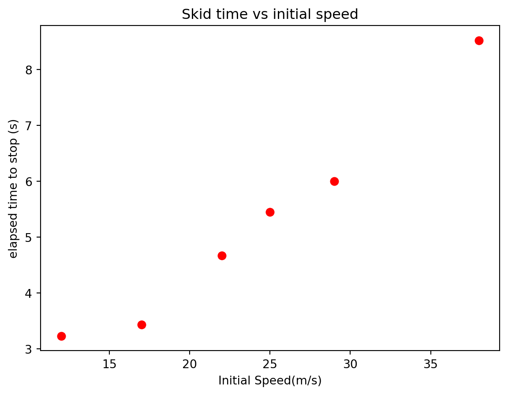

Learn how to extract physical meaning from the fit parameters.
Perform interpolation and extrapolation calculations.
Experimental Physics Skills
Learn how to plan and carry out a high-quality scientific experiment.
Learn the appropriate way to record your work during a scientific experiment.
Learn the meaning of interpolation and extrapolation. ## Background Information
Designing an Experiment
One of the objectives of this course is to learn how to design and carry out a successful experiment. In grade-school an experiment was any science related activity (the proverbial building of a volcano model was considered an experiment), but for a scientist an experiment is used to test a hypothesis. This test must be carried out carefully because the entire foundation of science depends on the integrity of the process. In today’s lab, a hypothesis will be given to you and you will be required to carry out the experiment to test it. The hypothesis for today’s lab involves the relationship between the period of oscillation and the mass of a mass-spring system.
When conducting an experiment, always follow these steps to ensure success.
Identify the system to be examined and list all of the inputs. In our case it is a mass-spring system, which involves a mass(\(m\)) and a spring, whose stiffness is characterized by a spring constant (\(k\)). The forces acting on the mass are (i) gravity and (ii) the tension in the spring. These are the inputs. They are the quantities that could change in the design of your experiment. The first step in designing your experiment is to give a short description of the system in a lab notebook (or jupyter notebook in our case).
Identify the model to be tested. The word “model” means a mental picture of how something works. Physicists prefer to express a model as a mathematical equation. For example, there is a model for how force depends on acceleration. The greater the net force, the bigger the acceleration of the object. The mass also fits into the model: The larger the mass, the larger the force needed to create the same acceleration. This mental model can be expressed in an equation \(F = ma\) It is valuable to use both the word description of the model as well as a mathematical representation. Today, the mental model is that the period of oscillation for a mass-spring system depends directly on the square root of the mass. Think about what this means. If I increase the mass, the period should get longer. But if I double the mass, the period won’t double. This is a mental model that allows us to do predictions of behavior. In physics it is almost required to reduce this model to an algebraic equation that can be used to calculate a prediction and an uncertainty on that prediction. For today’s experiment that equation is \[T = C\sqrt{m}\] where C is a factor that does not depend on mass. Today, this equation is given to you but for future experiments your group will have to come up with their own mathematical expression of the model. In your lab notebook (jupyter), record your model and the model equation.
Plan how you will know if the experiment is successful. The success of your experiment is more likely if you anticipate (or plan) what that success will look like. One way to do this is to plan how you will communicate your results. Often these results will take the form of a graph or plot of some kind and you should think of what graph you will make at the end of the experiment to communicate whether your model works (or not). In today’s experiment, a graph of T vs. m or even T vs.\(\sqrt{m}\) might be useful along with a curve fit (see section below for how to fit a curve to data in Python). Thinking about how you will communicate your results helps you decide what measurement you will make. In our case today it is hard to plot T vs. m if you don’t measure T and m, and recognizing this in advance helps you plan the experiment. Mock up your graph or figure in your lab notebook. Give axis titles and even units (but of course no data yet).
Plan your analysis. Symbolically layout and solve any needed equations (including the propagation of uncertainty equations). That way you will know exactly what measurements you need to make, and will not have to try to recreate the experiment when you are analyzing your results. If possible, rectify(linearize) your equation. As mentioned in step 3, fitting your data to a curve is a great way to determine whether the relationship between your data is what you hypothesized. The strongest and most reliable curve fits are straight line fits where the fit equation is something like \[y = mx + b\] When possible, the equation from step 3 should be reduced to the equation of a straight line, or linearized. In today’s lab we can do this by taking the square root of all of the mass measurements. If the equation can’t be linearized, it should at least be rendered into a form that can be used to predict the outcome of the experiment. Record your new equation in your lab notebook.
Choose ranges for the pertinent experiment variables. For today’s experiment the variables of interest are \(m\) and \(k\) and you should think carefully about reasonable values. It should be clear when you see the spring that putting a thousand kilograms of mass on the spring would be a bad idea. What values of \(m\) will give you good results in testing your theory and what values will not? Hooke’s law is not valid for all m and k (if you doubt this, think of your Christmas slinky after your brother got to it; it never looked the same again!). Using uncertainty analysis on the equation can be helpful in making this decision. Changes in mass that produce a change in T that is smaller than the uncertainty in T will not be noticeable, which means changes in the mass that are too small will be a waste of time and effort. Changes that are likely to break the equipment are also not desirable. All of these considerations should be considered before the experiment is conducted. If you fail to do this you may find find that you did not get good data, and must repeat all your work! Record your variable ranges in your lab notebook. As you perform the experiment note any deviations from this plan.
Plan the experimental procedure. The group should talk their way through the experiment. You might find yourselves saying something like “then you take the stopwatch and measure the period..” and you realize that you did not get a stop watch. Determine whether the equipment you need is available. Get in the habit of working through the procedure in advance to see if anything has been forgotten. Record the planned procedure in your lab notebook. As you perform the experiment, note any deviations from the plan and the reason for the deviation. Deviations are fine, just make sure you record them.
Perform the experiment and report on it in your lab notebook (jupyter). All of the previous steps were just planning. In this step you should actually do what you have planned to do. Then report your results. Specifically, in this step you should….
Explain the procedure that was actually followed, recording what you really did as you do it. This will probably not be just a restatement of the plan because things will change as you go. Record the equipment used and settings, values, etc. for that equipment. Did you learn how to use any new equipment? What did you learn that you want to recall later (say, when taking the final, or when you are a professional and need to use a similar piece of equipment five years from now).
Record the data you used. If you have a large set of values, you can place them in a file, and then record the file name and location in your lab notebook. Make sure this is a file location that does not change (emailing the data to yourself is still not a good plan).
Give a record of the analysis you performed. You planned this above, now record what you actually did
Give a brief statement of your results and their associated uncertainties.
Draw conclusions: Do your results support the theory? Why or why not? What else did you learn along the way that you want to record. (This is where we may compare the percent error to our relative uncertainty).
Python Skills
Curve Fitting
Often in science you will gather data as a way to explore the relationship between two physical quantities and/or to validate your theories. For example, consider the time it takes a car to stop starting from the moment you slam on your brakes, locking them in place (most modern cars are designed to prevent this). The question is: How does the stopping time depend on the car’s initial speed. If you are familiar with Newtonian mechanics at all, you might hypothesize that the acceleration of the car should not depend on the initial velocity and hence the stopping time will increase linearly with the initial speed. Furthermore, the following kinematic equation
\[
\begin{align*}
v_f &= v_i - a \Delta t\\
0 &= v_i - \mu_k g \Delta t\\
\Delta t &= {v_i\over \mu_k g}
\end{align*}
\]
would suggest that the slope of \(\Delta t\) vs. \(v_i\) function is \({1\over a} = {1\over \mu g}\). In other words, the theory of kinematics suggest that the acceleration should be independent of initial speed. To prove your idea, you should first measure the stopping time for cars with a variety of initial speeds (shown below).
Initial Speed (m/s)
Skid time (s)
12
3.23
17
3.43
22
4.67
25
5.45
29
6.00
38
8.52
Text(0.5, 1.0, 'Skid time vs initial speed')

We notice that the data looks linear which matches our hypothesis that the acceleration is constant.
The next thing to do is to find the line that passes through the data points as close as possible. When the fit function is a polynomial , we can use the polyfit function from numpy. This function takes three argument: the independent data set, the dependent data set, and the order of the polynomial
polyfit(x,y,order)
The polyfit function returns a list of numbers containing the function parameters for the best fit function.
from matplotlib import pyplot as pltfrom numpy import polyfitt = [3.23,3.43,4.67,5.45,6,8.52]vi = [12,17,22,25,29,38]params = polyfit(vi,t,1)slope = params[0]yint = params[1]g=9.8#Acceleration due to gravitymu =1/(slope * g)print(params)print(mu)
[0.20971747 0.21840032]
0.48656326406696415
In this case, \(0.2097\) is the slope of the best-fit function and \(0.2184\) is the y-intercept of the best fit function. Remembering our theory from above, we notice that the slope of this fit function can be used to calculate the coefficient of friction between the rubber tires and the roadway.
\[
\begin{align*}
m &= {1\over \mu g}\\
\mu &= {1\over m g}
\end{align*}
\]
It is often useful to plot the fit function on top of the data to verify that it really matches the data.
Activity I- Conduct the expriment (mass-spring system)
Follow all of the steps outlined above to perform a high-quality experiment involving a mass-spring system. Since this is your first time, an outline of the steps will be provided below.
Identify the system being studied. List all relevant variables.
Your response:
Identify the hypothesis or model that you will test. Provide both a verbal description of this model and and mathematical equation. (use \(\LaTeX\))
Your response:
How will you know if your experiment is successful?
Your response:
Plan your analysis.
Your response:
Choose reasonable ranges for the pertinent variables in your experiment.
Your response:
Plan the experimental procedure.
Your response:
Carry out the experiment and report your results. Include all data collected, plots constructed and give evidence for or against your hypothesis. Data should be placed in a table of some kind. You can either use a markdown table in a text cell or a Pandas dataframe (see activity I from lab 2 for a refresher) to display the data.
Your response:
# Perform calculations and construct plots here.
Activtity II - Interpolation and Extrapolation (Testing the Law)
Test the law you developed in activity I. Use the equation for the period to predict periods for masses that you haven’t tried. Then measure the periods to verify that the prediction was correct. Do this in two way:
1. By interpolating, predict the period of oscillation for an \(80\) g mass. Record your methods and results. Interpolation means to predict an output value (in this case, a period) for an input value that falls within the range of the input values you have used in your measurements. If you measured periods for \(20\) g, \(30\) g, \(40\) g, \(50\) g, and \(100\) g, then \(80\) g is within this range. Using the curve fit equation generated by the data we measured, we can plug in \(80\) g and predict the period for our spring with an \(80\) g mass. This is interpolation. This will test our model to see if it works for new inputs. If it does not, our model is probably not good.
2. By extrapolating, predict the period of oscillation for a \(300\) g mass. Record your methods and results. Extrapolation means to predict an output value (in this case, a period) for an input value that falls outside the range of the input values you have previously measured. If you measured periods for \(20\) g, \(30\) g, \(40\) g, \(50\) g, and \(100\) g, then \(300\) g is outside this range. Using the curve fit equation generated by the data we measured, we can input \(300\) g and predict the period for our spring with an \(300\) g mass. Extrapolation is more risky. The conditions of our experiment might change outside our range (think, in a limiting case, we could break the spring, and get an infinite period!). But if things are done carefully, this is also a test of the validity of our model.